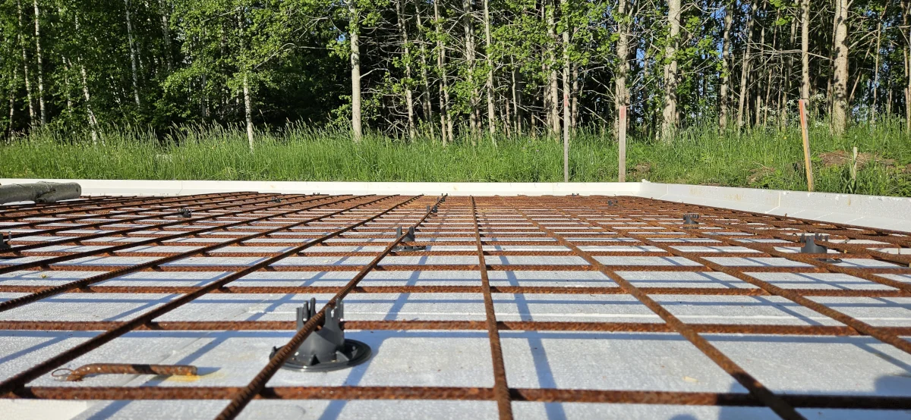
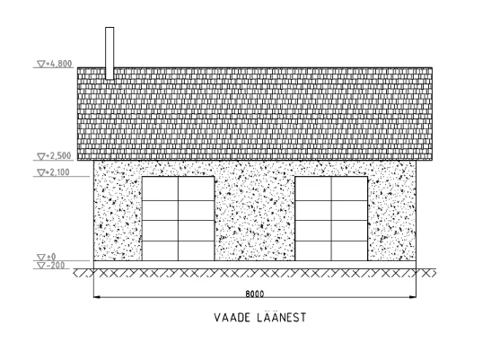
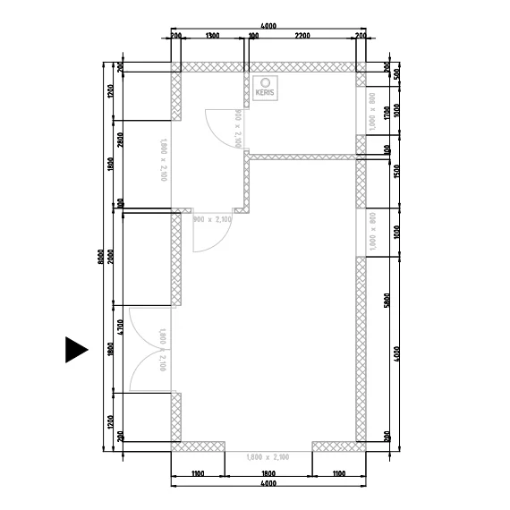
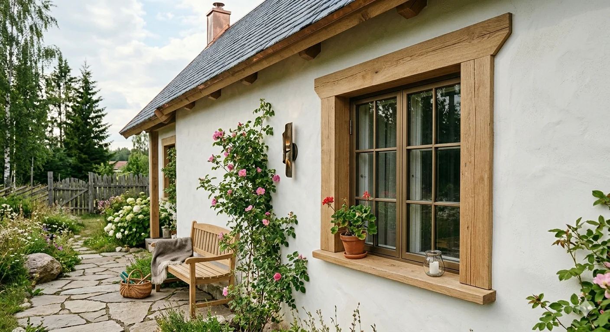
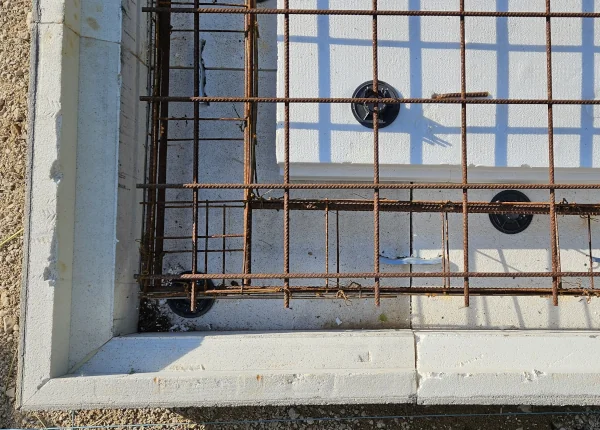

Typology
Sauna House

Project 01
Straw & Concrete explores how warm biological fibers and calibrated mineral mass can coexist in a single, durable envelope. The project frames sustainability as a discipline of precision, where every joint, load path, and thermal layer is made intentionally visible.
Typology
Sauna House
Phase
02 / Foundation
Structure
Timber & Straw Bale
Location
Nordic Region



Phase 00: Design & Architectural Drawings
Before breaking ground, the structure was synthesized in digital and physical line drawings. The design methodology strips away ornament, focusing purely on spatial volumes and orientation. Every wall axis is bound to the exact dimensions of the straw bales to eliminate cutting waste, optimizing structural integrity while framing the expansive Nordic scenery through large, calculated openings.
Phase 01: Connection to power grid and utilities
Before the foundation is laid, connections to the power grid and other utilities are established to ensure seamless integration with the building's infrastructure.


Phase 02: Foundation / Current Status
Foundation works focus on exact concrete alignment, controlled reinforcement spacing, and moisture management at every interface. The slab and perimeter walls are designed as a calibrated thermal battery, storing heat during operating cycles while protecting the upcoming straw bale envelope from capillary and structural stress.


Project Economics
The budget is structured around measurable construction milestones. Click on individual phases to expand and view the detailed line-item cost breakdowns.
| Phase | Phase name | Cost |
|---|---|---|
Phase 00 Design & Drawings 0 €
Architectural Concept & Drafting
0 €
|
||
Phase 01 Utilities Connection 18,955.84 €
Road construction
3,600.00 €
Connection to Electrical Grid
10,367.64 €
Water Infrastructure
4,988.20 €
|
||
Phase 02 Foundation 2,801.91 €
Insulation & Rebar
2,304.60 €
Water, Sewerage & Heating
347.31 €
Concrete pouring & Curing
150.00 €
|
||
| Total | 21,757.75 € | |